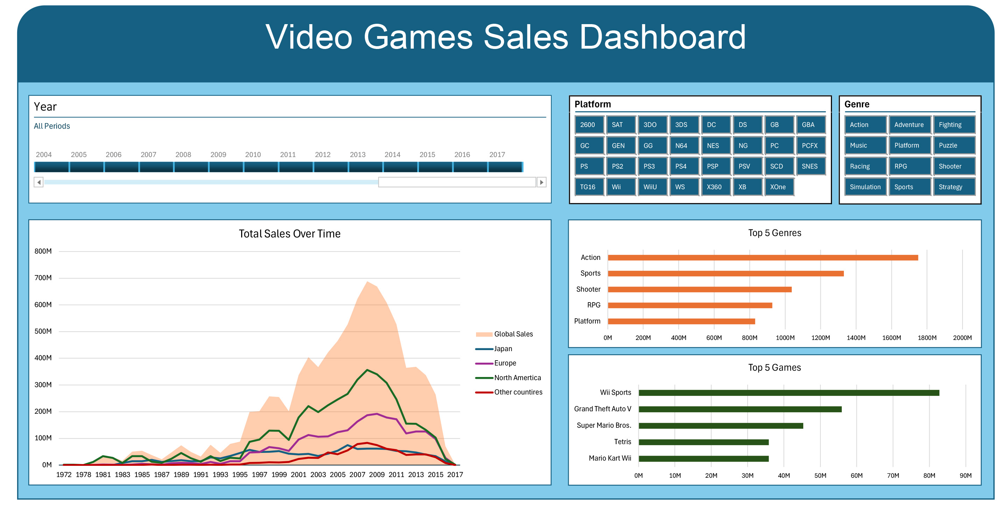

Dashboard of Video Games sales using Excel and Python
In this project I created a dashboard for Video Games sales based on kaggle data set link.
Since data in the project was not fully compleat I used Python to screap www.rawg.io website.
All files for this project can be found here link.

This interactive dashboard allows user to choose time period, platform and genre to analysie sales.
User also can cross refrence diffrent slicers to get the resault needed.
Frist step was cleaninig the data. (The image shows small part of data set).
I decided to remove rank column, and change the certain abbreviation for clarity. Additioanly I seprated date into two columns. One had a date format for
time slicer and other was created for chart clarity. I used DATE() function to convert year, that were in number format, into a date format.
After cleaning the data I created 3 pivot tables. First one sumed data of each year and divided into separated columns based on the country. Second one sumed data based on genre. Last one showed 5 best sold games.
Despite rebust nature of the data set there were certaing relese dates missing.
I decided to use my python skills to find the missing data. Full code can be found here link.